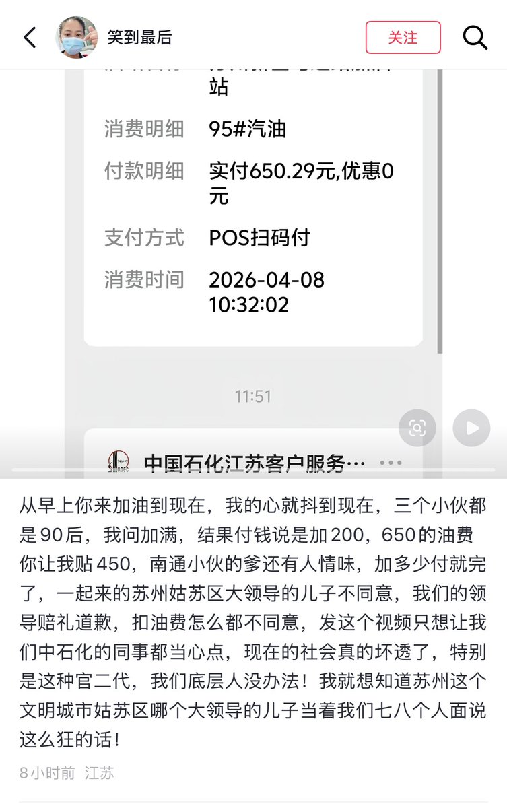

雪秋小可爱
@XUEQIUxka
@whyyoutouzhele 还有高手

李老师不是你老师
@whyyoutouzhele
4月7日，江苏苏州。一名阿姨称，她在加油站工作，当天来了一辆挂着南通车牌的奥迪车过来加油。
阿姨说，她听到对方说加满，加完后一共650元。但司机说“我加的是200，我只付200快钱”
期间车内另一名乘客说：“你知道我爹是姑苏区的谁谁谁吗？我们只支付200元” https://t.co/IyILgcyusM